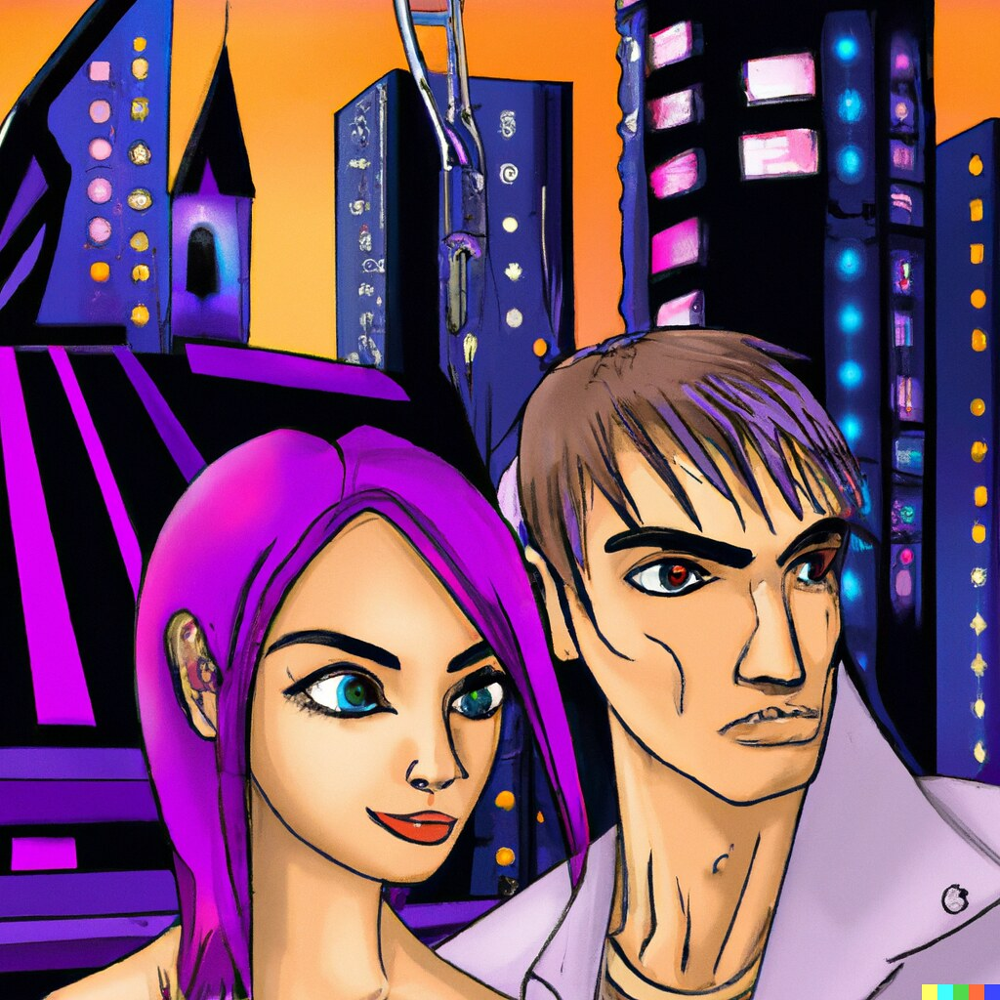
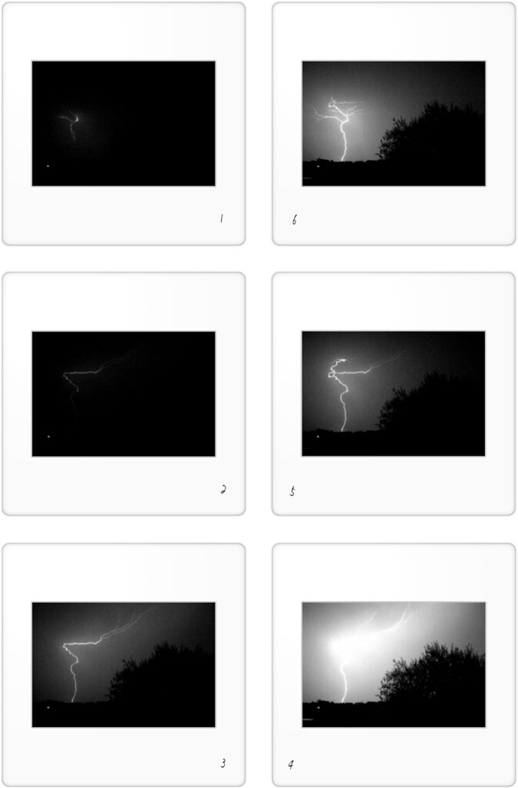
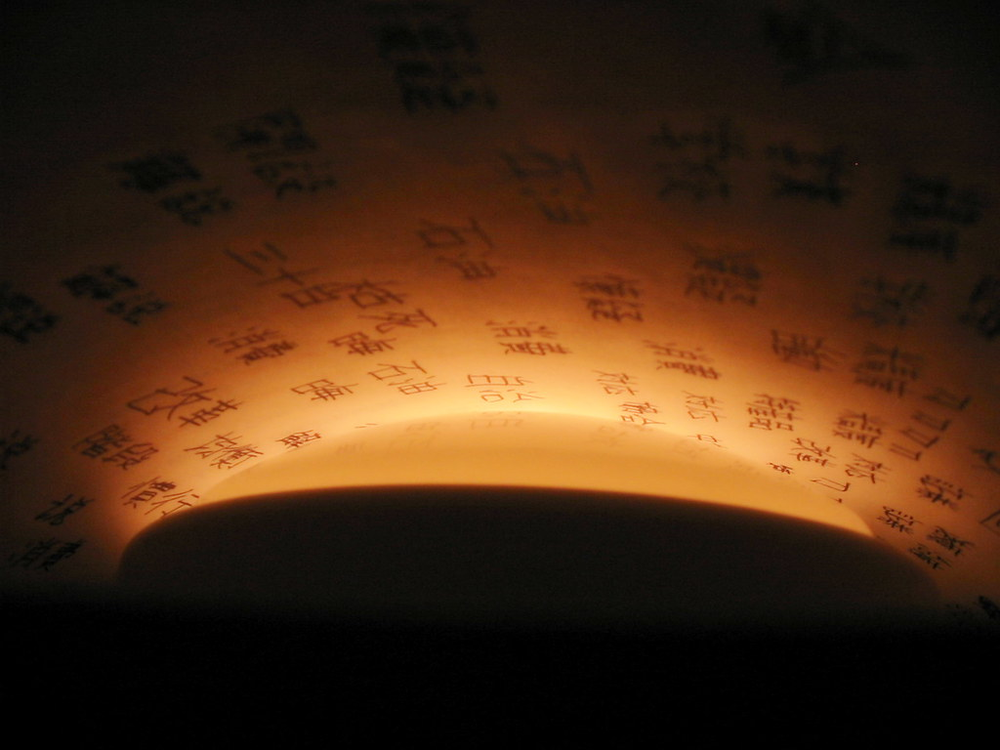
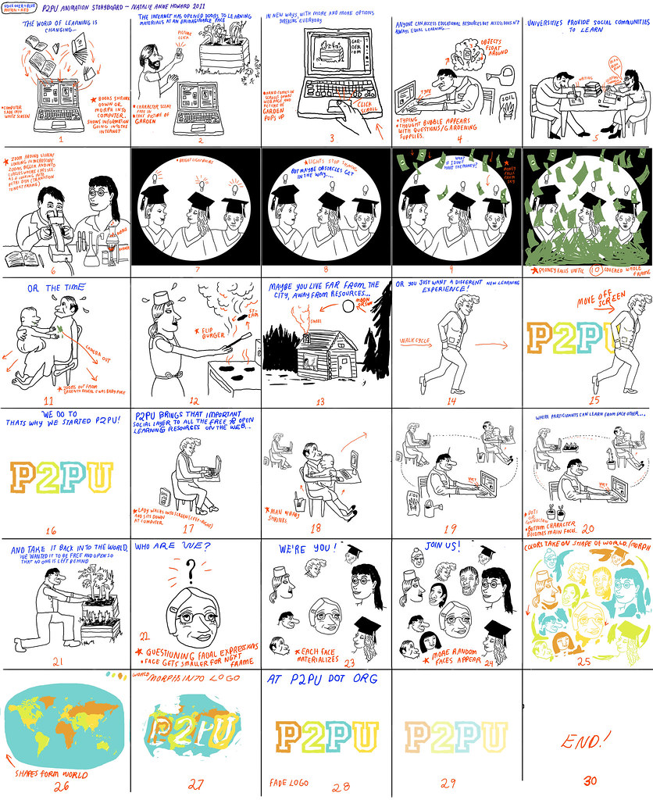
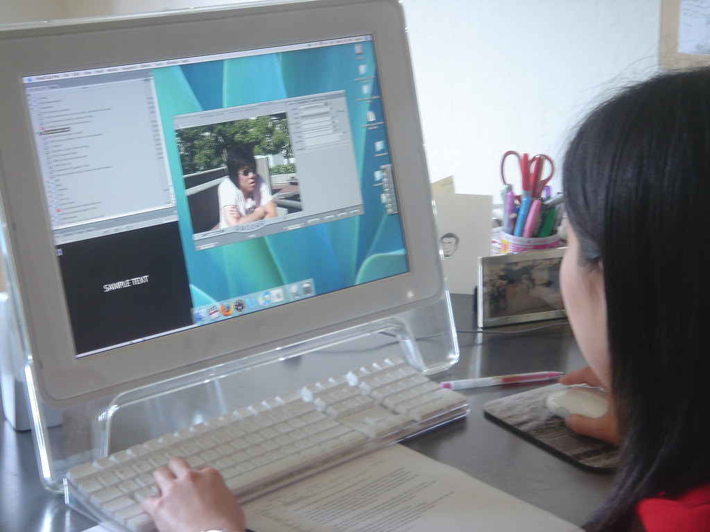

Describe the shot, not the whole movie.
Live Timeline Cockpit
Direct AI animation like a timeline, not a text box.
Relix helps online animators generate, remix, keyframe, review, and publish animated sequences from one browser workspace - with AI assistance that understands shots, references, timing, and iteration.

FRAME 048
CAMERA: PUSH-IN
prior frame
identity ref




SHOT 04 // 82%
INTERPOLATION: SOFT EASE
PASS: STYLE REMIX
CAM
POSE
RENDER
Block beats before burning render time.
Create variations with references locked.
Set poses, timing, and camera movement.
Smooth motion without losing intent.
Change style, energy, or camera - keep continuity.
Queue passes for social, widescreen, or vertical.
Export, share, review, repeat.
Prompt-to-Shot Panel
Turbo passKeep the character. Change the motion.
5s10sseed holdvariation C
Intensity 06
Character Lock / Reference Memory
REF LOCK: ON
same jacket
same silhouette
same lens
Motion Arc Assist
LOOP CHECK: CLEANRender Pass Queue
EXPORT: 9:16 READYclean pass
style pass
smear frame
vertical crop
thumbnail loop
Storyboard Sync
Shot Variations
Style Remix
Social Export
Review Room
Collaboration + Publishing
Review the frame, not the file name.
Every comment lands on a shot, frame, or pass, so creators can keep the sequence moving instead of hunting through exports.
Invite a Reviewer00:03:12 hold this silhouette
FRAME 048 push lens closer
Mina
Jay
v04v05v06
TikTok 9:16
YouTube 16:9
Loop 1:1
Client Review
Creator CTA / Pricing
Choose the room your sequence needs.
Solo Animator
For daily shorts, loops, character tests.
- Timeline
- 12 active shots
- Exports
- Social loops
- Review
- 1 seat
Creator Room
For channels and collabs with shared review.
- Timeline
- 48 active shots
- Exports
- 9:16, 16:9, 1:1
- Review
- 6 seats
Studio Pipeline
For indie teams, export workflows, and production review.
- Timeline
- Unlimited rooms
- Exports
- Pipeline presets
- Review
- Team seats
Render Rail Complete
Your next sequence is ready to direct.
5-second ideas become directed sequences. Built for creators who think in shots, not folders.
PASS COMPLETE // LOOP READY